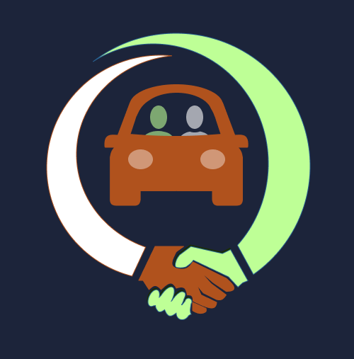
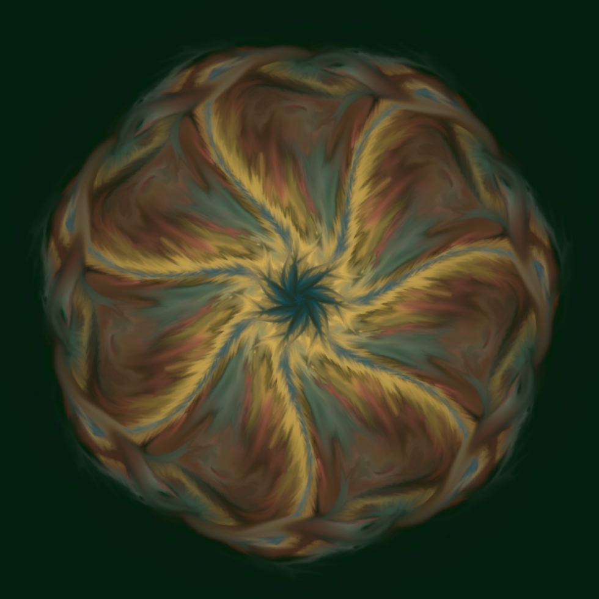
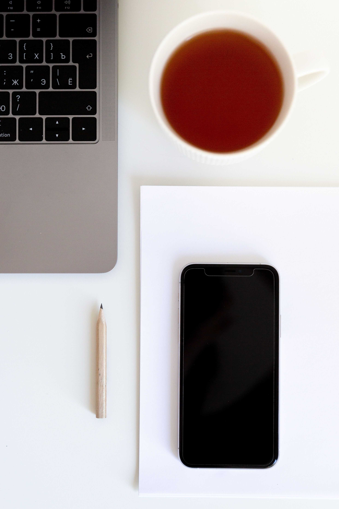

Welcome to my personal website! (Please note, it is still under construction, so not all the pieces are in place yet)
I'm Audrey Evergreene, a retired personal trainer and massage therapist turned web developer. While working with clients to help them achieve their health and wellness goals, I discovered a love for puzzles and complex challenges. As I created marketing content and a website for my clinic, I found my fascination of solving difficult problems extended to web development, as well. Embracing the blend of creation and logic, web development has been the perfect outlet for my skills and passion.


What I love about web development is the process of taking a project or business's needs and turning them into a tangible product. The challenge of brainstorming creative solutions and contemplating the different ways a product can meet the needs of its intended audience. Once I have a clear understanding of the project requirements, I relish the opportunity to put my front-end development skills to work and bring the project to life. The satisfaction comes from seeing an idea go from concept to reality; web development allows me to explore my creativity and problem-solving skills.
Projects
Carpooly is an app that connects customers, simplifying finances and communications. I designed logos and frontend elements. And worked with a team, creating functional webpages and intuitive UX.
For PomoTime an app for innovative productivity and creating initiative. Led business partner to implement plan for a responsive design. Increasing coder productivity by 75% in 4 weeks!

Finally, I also worked on solo projects where I designed and developed responsive, intuitive UI/UX that showcased my skills as a web developer. Across all of these projects, my attention to detail and love of beautiful design shone through, resulting in products that are both functional and visually appealing.
Beyond my work as a web developer, I'm a lifelong learner who enjoys exploring new technologies, learning new software, and discovering different ways to create beautiful things with technology. Whether it's experimenting with new design tools or exploring the latest coding languages, I'm constantly seeking out new challenges and opportunities to grow as a developer and as a person.
If you're looking for a dedicated, results-driven web developer who brings a love for problem-solving, a passion for creating elegant, efficient code, and a commitment to lifelong learning to every project they work on, then look no further. I'd love to discuss how I can help you achieve your web development goals.